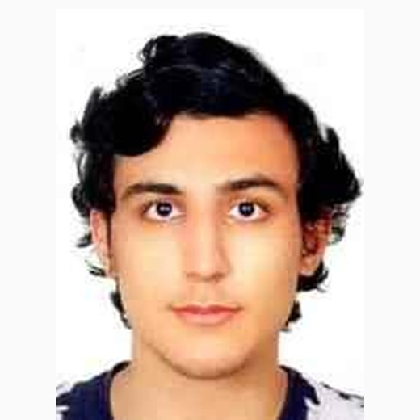

Muhammet Hamza Duran
ProfileHakkımda
Third-year Digital Game Design student focused on game and level design in Unreal Engine 5. I design gameplay systems and levels and build them with Blueprint; when a project requires it, I also model and texture props in Maya and Substance Painter. In team projects, I have also taken on the responsibility of leading the team.Unreal Engine 5 ile oyun ve seviye tasarımına odaklanan Dijital Oyun Tasarımı 3. sınıf öğrencisiyim. Oynanış sistemleri ve seviyeler tasarlıyor, bunları Blueprint ile kuruyorum; proje gerektirdiğinde Maya ve Substance Painter ile obje modelleme ve kaplama da yapıyorum. Ekip projelerinde ekibi yönetme sorumluluğunu da üstlendim.
ProjectsProjeler
First-person underwater restoration game. Wrote a design document of 150+ pages covering the core loop, economy and progression; built the first area's blockout with 2,000+ physics-based trash objects and a life layer that returns as areas are cleaned; developed the vacuum, sand, mud and kelp systems in Blueprint.Birinci şahıs sualtı restorasyon oyunu. Çekirdek döngü, ekonomi ve ilerlemeyi kapsayan 150 sayfayı aşan tasarım belgesini hazırladım; ilk alanın blockout'unu 2.000'i aşkın fizik tabanlı çöp nesnesi ve temizlendikçe canlanan yaşam katmanıyla kurdum; vakum, kum, çamur ve yosun sistemlerini Blueprint ile geliştirdim.
Horror prototype set on a train. Designed the levels with fog, lighting and environmental guidance; built an enemy that responds to the player's footsteps and flashlight, an object-based code puzzle and a QTE system in Blueprint.Trende geçen korku prototipi. Seviyeleri sis, ışık ve çevresel yönlendirmeyle tasarladım; oyuncunun ayak seslerine ve el fenerine tepki veren düşmanı, nesnelere dayalı şifre bulmacasını ve QTE sistemini Blueprint ile kurdum.
Learned Blueprint on this project, starting from our jam prototype Diamond Rush. Built touch controls, health and damage, wave-based enemies and the loot chest, and delivered the Android build.Blueprint'i game jam prototipimiz Diamond Rush'tan başlayarak bu projede öğrendim. Dokunmatik kontrolleri, can ve hasar sistemini, dalgalar hâlinde gelen düşmanları ve sandık sistemini kurdum, Android sürümünü çıkardım.
Defined the layout and contents of the rooms. Modeled detailed props in Maya and textured them in Substance Painter, including the butcher's counter, fireplace, payphone and laundry cart; created the library and laundry room textures.Odaların kurgusunu ve içeriğini belirledim. Kasap tezgâhı, şömine, ankesörlü telefon ve çamaşır sepeti gibi ayrıntılı objeleri Maya'da modelleyip Substance Painter'da kapladım; kütüphane ve çamaşırhanenin dokularını hazırladım.
Story-driven jam game. Developed the main idea and modeled the childhood objects at the center of the story.Hikâye odaklı jam oyunu. Ana fikri geliştirdim ve hikâyenin merkezindeki çocukluk eşyalarını modelledim.
Strategy board game; designed the economy of population, resource production, dice-based trade and warfare.Strateji kutu oyunu; nüfus, kaynak üretimi, zara dayalı ticaret ve savaştan oluşan ekonomiyi tasarladım.
ExperienceDeneyim
Edit daily news videos for social media and write their copy; shoot on location with camera, microphone and drone.Sosyal medya için günlük haber videolarını kurguluyor ve metinlerini yazıyorum; kamera, mikrofon ve drone ile sahada çekim yapıyorum.
Set up and ran my own online store, managing its advertising and sales; supported a digital marketing agency with advertising and market analysis.Kendi e-ticaret mağazamı kurup reklam ve satışlarını yönettim; bir dijital pazarlama ajansına reklam ve pazar analizi desteği verdim.
ActivitiesEtkinlikler
Deep Jam 2026 (GameDevIst) training program and game jam participant.Deep Jam 2026 (GameDevIst) eğitim programı ve game jam'i katılımcısı.